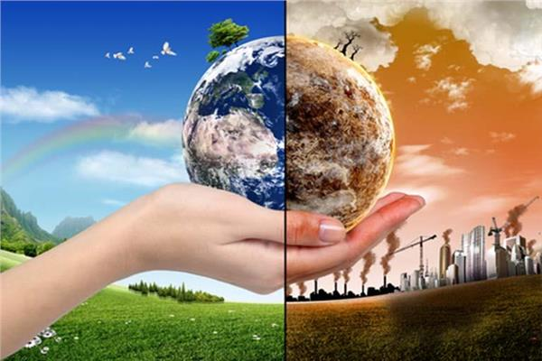
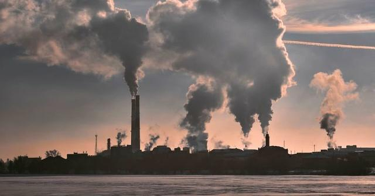

climate change

What is climate change?
Climate change refers to long-term shifts in temperatures and weather patterns. These shifts may be natural and occur, for example, through changes in the solar cycle. However, since the 19th century, human activities have become the main cause of climate change, mainly due to the burning of fossil fuels, such as coal, oil and gas. Burning fossil fuels releases greenhouse gases that act like a blanket envelope around the world, trapping the sun's heat and raising temperatures. Examples of greenhouse gas emissions causing climate change are carbon dioxide and methane. These gases are produced, for example, by using gasoline to drive cars or coal to heat buildings.It can in turn rid fields and lands of weeds, shrubs, and thinning carbon dioxide. The landfill network is a major source of methane emissions. Furniture and industry consumption, production, production and professional use.
Concentrations of greenhouse gases are at their highest levels in two million years
And emissions continue to rise. As a result, the globe is now 1.1°C warmer than it was in the late 19th century. And the last decade (2011-2020) was the warmest on record. Many people think that climate change basically means warming, but warming is only the beginning of the story, and because the Earth is such a system, where everything is connected, changes in one area may lead to changes in all others. The consequences of climate change include, among others, severe droughts, water scarcity, severe fires, rising sea levels, floods, melting of polar ice, catastrophic storms, and degradation of biodiversity.
What are climate changes and their risks and effects?
Warming and protocol
ozone
earthquakes
Fires fires
Tornadoes
Does climate change affect humans?
Climate change is already affecting health in several ways, including causing death and disease from increasingly frequent extreme weather events such as heat waves, storms, and floods, disrupting food systems, and increasing zoonoses, food and waterborne diseases, vectorborne diseases, and mental illness. Health problems.

What causes climate change?
burning fossil fuels
Deforestation
Use of transportation
use of pot